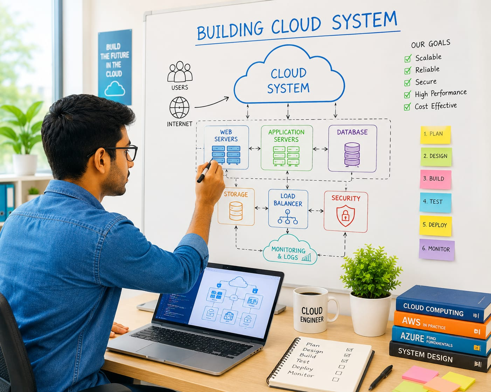

- Imagine a company wants to launch a new app for millions of users.
- To support so many users, the app needs powerful computer servers.
- These servers store information and helps to run the app smoothly.
- A group of these servers connected through internet is called a cloud system.
- The person who designs and builds these cloud systems is called a Cloud Engineer.
- 👉 In simple words: Cloud Engineers design and build cloud systems that help websites, apps, and online services work properly.
Cloud Engineer
🧑🎨 What Do They Do?

🎓 How to Become a Cloud Engineer
You have two options:
-
Start early with a Diploma
After Class 10, you can choose a relevant diploma course. Complete the diploma and join the second year of an engineering course by applying through lateral entry. -
Finish Class 12
Complete Class 11 and 12, then you can do a B.Tech./B.E. in the relevant field.
These beginner-level courses help students learn computer systems, networking, cloud computing, programming, and cloud infrastructure fundamentals.
Diploma in Computer Science Engineering
Duration: 3 Years
Eligibility: Class 10 Pass
Entrance Exam: Polytechnic Entrance Exam / Merit-Based Admission
Diploma in Information Technology
Duration: 3 Years
Eligibility: Class 10 Pass
Entrance Exam: Polytechnic Entrance Exam / Merit-Based Admission
📝 Exam Details
(Click on the exam name to see full details)
Polytechnic Entrance Exam Merit-Based Admission Institute-Level TestNote: Many Cloud Engineers begin by learning programming, networking, cloud platforms, servers, databases, and cloud architecture before specializing in cloud engineering and infrastructure design.
These degree programs help students learn cloud computing, software development, cloud architecture, virtualization, databases, and infrastructure engineering.
B.Tech in Computer Science Engineering
Duration: 4 Years
Eligibility: 10+2 Pass (with Physics, Chemistry, and Mathematics)
Entrance Exam: JEE Main / State Engineering Entrance Exams
B.Tech in Information Technology
Duration: 4 Years
Eligibility: 10+2 Pass (with Physics, Chemistry, and Mathematics)
Entrance Exam: JEE Main / State Engineering Entrance Exams
Bachelor of Computer Applications (BCA) in Cloud Computing and DevOps
Duration: 3 Years
Eligibility: 10+2 Pass (Any stream; Computer Science preferred)
Entrance Exam: CUET-UG / University Merit Exams
B.Sc in Cloud Systems Administration
Duration: 3 Years
Eligibility: 10+2 Pass (Science stream with Mathematics)
Entrance Exam: University Entrance Tests / Merit-Based Admission
📝 Exam Details
(Click on the exam name to see full details)
JEE Main State Engineering Entrance Exam CUET-UG University Entrance Test Merit-Based AdmissionNote: Cloud Engineers usually learn programming, cloud platforms, databases, networking, automation, and cloud architecture during their degree programs.
These lateral entry programs help diploma holders learn advanced cloud computing, cloud architecture, infrastructure engineering, automation, and cloud deployment technologies.
B.Tech Lateral Entry in Computer Science Engineering
Duration: 3 Years
Eligibility: Diploma in Computer Science or Information Technology
Entrance Exam: State Lateral Entry Entrance Exams
B.Tech Lateral Entry in Information Technology
Duration: 3 Years
Eligibility: Diploma in Computer Science or Information Technology
Entrance Exam: State Lateral Entry Entrance Exams
Note: Diploma students can directly enter the second year of selected B.Tech programs and continue learning cloud platforms, cloud architecture, automation, and infrastructure engineering.
These advanced programs help students learn cloud architecture, enterprise cloud systems, infrastructure automation, DevOps, and large-scale cloud platform design.
M.Tech in Cloud Computing and Enterprise Infrastructure
Duration: 2 Years
Eligibility: Graduate (B.Tech/B.E. in CSE/IT or MCA with a valid GATE score)
Entrance Exam: GATE / University Entrance Exams
M.Sc. in Cloud Computing
Duration: 2 Years
Eligibility: Graduation from a recognized university
Entrance Exam: University admission process
MCA – Cloud Computing
Duration: 2 Years
Eligibility: BCA / Bachelor’s degree in Computer Science or equivalent, or B.Sc./B.Com./B.A. with Mathematics at 10+2 or graduation level, with minimum 50% marks (45% for reserved category)
Entrance Exam: University admission process
Post Graduate Diploma in Cloud Computing
Duration: 1 Year
Eligibility: Graduate (Any technical or computing background)
Entrance Exam: Direct Admission
📝 Exam Details
(Click on the exam name to see full details)
GATE University Entrance Test Direct AdmissionNote: Many Cloud Engineers pursue advanced studies to specialize in cloud architecture, enterprise infrastructure, automation, DevOps, and large-scale cloud platform design.
Note:
(Age limits, marks, and admission process may vary depending on the college or state.
Below are some colleges that offer these courses.
These courses are available in many colleges and universities across India. You can choose colleges based on your location, budget, and entrance exams.)
🏛️ Colleges offering these courses in India
(Tap on a college to view the details)
After Class 10
Galgotias University, Noida, UP Government Polytechnic College, Gujarat Government Polytechnic, HyderabadAfter Class 12
Vellore Institute of Technology (VIT), Vellore Lovely Professional University, Punjab S-VYASA University, Bengaluru REVA University, BengaluruAfter Diploma (Lateral Entry)
Lovely Professional University, Punjab Manipal Institute of Technology, ManipalSTEP 1
Imagine you are working as a Cloud Engineer at a company like Google or Amazon.
STEP 2
Your job is to build cloud systems that can be used by millions of people.
STEP 3
You decide how many cloud servers and storage systems are needed.
STEP 4
You create and set up the cloud systems for new apps and websites.
STEP 5
You make sure the cloud system can handle many users at the same time.
STEP 6
If there is a problem, you improve the system and help keep it running smoothly.
STEP 7
If you enjoy building technology and solving problems, this career may suit you.
Where do Cloud Engineers work? (Job Roles + Growth)
Cloud Engineers work in : Cloud computing companies, IT companies, Cloud service providers, Data centers, Software companies, Web hosting companies, and Cloud infrastructure teams.
🟢 Beginner Roles
Junior Cloud Engineer
(After Short-Term Certification / Diploma)
Helps build and test cloud systems under senior engineers.
Cloud Engineer Trainee
(After Diploma / BCA / B.Tech)
Assists cloud teams in deploying applications and services.
🔵 Mid-Level Roles
Cloud Engineer
(After BCA / B.Tech + Certification)
Builds cloud infrastructure used by websites, apps, and online services.
DevOps Engineer
(After Cloud Engineering Experience)
Automates software deployment and cloud operations.
🟣 Advanced Roles
Principal Cloud Engineer
(After MCA / M.Tech + Experience)
Designs large-scale cloud systems for global organizations.
Cloud Infrastructure Director
(After Senior Leadership Experience)
Leads teams that build and manage enterprise cloud platforms.
Cloud Technology Companies
Build cloud platforms and infrastructure used by millions of users worldwide.
Software & IT Companies
Develop cloud systems that power websites, apps, and business services.
E-Commerce Companies
Design cloud infrastructure that supports large online shopping platforms.
Banking & Financial Companies
Build secure cloud environments that handle financial transactions and data.
Mobile App & Technology Companies
Create cloud systems that store and process data for popular apps.
Remote Cloud Engineering Jobs
Design, deploy, and maintain cloud infrastructure from anywhere in the world.
(Click Yes or No for each question)
1. Have you ever wondered how apps like Instagram, YouTube, or Netflix continue working smoothly even when millions of people use them at the same time?
2. Have you ever thought about where all the photos, videos, and messages uploaded by millions of users are stored?
3. Have you heard of cloud systems that store and manage information for apps and websites?
4. Are you interested in learning how cloud systems are built and set up for websites and apps?
5. Imagine you work for a company like Instagram or Netflix. Your job is to design and build the cloud systems that help millions of people use these apps every day. Does this excite you?